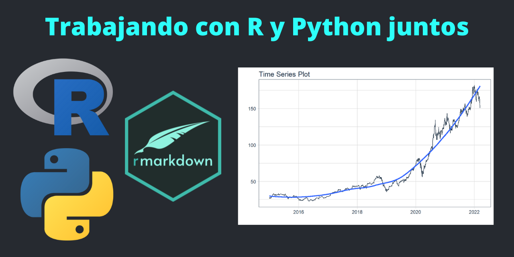
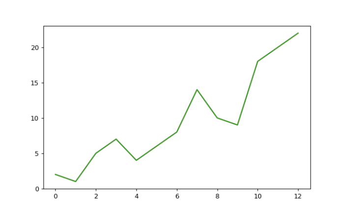
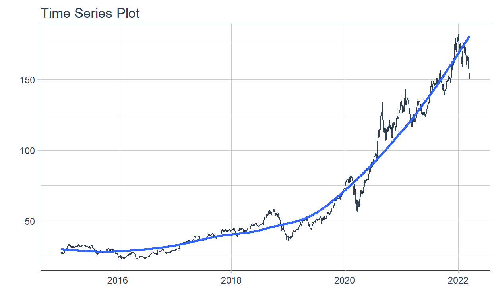

Trabajando con R y Python juntos

Vea la instrucciones de instalación: https://docs.anaconda.com/anaconda/install/
Una vez instalado, siguientes pasos debe realizarse en la terminal de anaconda si eres usuario de windows.
Para crear un entorno nuevo de Python debe ejecutar el siguiente codigo en la Terminal de Anaconda: (solo se debe realizar una sola vez)
conda create -n py3.8 python=3.8 scikit-learn pandas numpy matplotlibEl codigo anterior crea un entorno de python de nombre py3.8 (le puedes poner otro nombre) con la version 3.8 de Python y adicionalmente se instala las ultimas versiones de scikit-learn, pandas, Numpy y Matplotlib. Mas adelante se puede instalar mas paquetes a este entorno creado.
Para ver un listado de los entornos que hayamos creado ejecute el siguiente código en la Terminal de Anaconda:
conda list envSi ves py3.8 en la lista es porque se creo correctamente.
Para activar y usar el entorno creado py3.8 ejecute el siguiente código en la Terminal de Anaconda:
conda activate py3.8Para listar los paquetes del entorno activado ejecute el siguiente código en la Terminal de Anaconda:
conda listOtra forma de listar paquetes:
conda env exportPara verificar si un paquete esta instalado:
conda list html5libPara enumerar todos los paquetes en un entorno desactivado:
conda list -n <my env>Para actualizar los paquetes del entorno:
conda update --allPara instalar un paquete en el entorno:
conda install <package_name>o también:
conda install -c conda-forge <package_name>Una vez realizado lo anterior podemos usar Python en RMarkdown o Shiny App.
Primero hay que cargar el paquete reticulate para usar Python.
library(tidyverse)
library(reticulate)Listar los entornos de Conda en RMarkdown:
reticulate::conda_list() name
1 Anaconda3
2 R
3 notebook 550
4 py3.8
5 r-gluonts
6 r-reticulate
python
1 C:\\Users\\Tama\\Anaconda3\\python.exe
2 C:\\Users\\Tama\\Anaconda3\\envs\\R\\python.exe
3 C:\\Users\\Tama\\Anaconda3\\envs\\notebook 550\\python.exe
4 C:\\Users\\Tama\\Anaconda3\\envs\\py3.8\\python.exe
5 C:\\Users\\Tama\\AppData\\Local\\r-miniconda\\envs\\r-gluonts\\python.exe
6 C:\\Users\\Tama\\AppData\\Local\\r-miniconda\\envs\\r-reticulate\\python.exeActivar el entorno py3.8 en R Markdown:
use_condaenv("py3.8", required = TRUE)Verificar que reticulate esté usando el entorno py3.8 en R Markdown:
py_config()python: C:/Users/Tama/Anaconda3/envs/py3.8/python.exe
libpython: C:/Users/Tama/Anaconda3/envs/py3.8/python38.dll
pythonhome: C:/Users/Tama/Anaconda3/envs/py3.8
version: 3.8.12 (default, Oct 12 2021, 03:01:40) [MSC v.1916 64 bit (AMD64)]
Architecture: 64bit
numpy: C:/Users/Tama/Anaconda3/envs/py3.8/Lib/site-packages/numpy
numpy_version: 1.21.2
NOTE: Python version was forced by use_python functionRealizar la prueba en un chunk Python:
1 + 12Adicionalmente se puede convertir la consola de rstudio en consola de python.
repl_python()Use Esc para salir.
import numpy as np
import pandas as pd
import matplotlib.pyplot as pltNumpy
a = np.array([[1, 2, 3, 4], [5, 6, 7, 8], [9, 10, 11, 12]])
print(a)[[ 1 2 3 4]
[ 5 6 7 8]
[ 9 10 11 12]]a.ndim2a.shape(3, 4)Pandas
df = pd.DataFrame(a)
print(df) 0 1 2 3
0 1 2 3 4
1 5 6 7 8
2 9 10 11 12df.to_csv('pd.csv')data = pd.read_csv('pd.csv')
print(data) Unnamed: 0 0 1 2 3
0 0 1 2 3 4
1 1 5 6 7 8
2 2 9 10 11 12Matplotlib
b = np.array([2, 1, 5, 7, 4, 6, 8, 14, 10, 9, 18, 20, 22])
print(b)[ 2 1 5 7 4 6 8 14 10 9 18 20 22]plt.plot(b)
plt.show()
Ahora instalaremos un paquete nuevo en nuestro entorno conda para extraer datos de las api de Yahoo Finance con Python para luego graficarlos con R
Ejecutar en la terminal de anaconda en el entorno py3.8.
conda install yfinanceCargamos la librerias de Python:
from datetime import date
import yfinance as yfCreamos variables:
START = "2015-01-01"
TODAY = date.today().strftime("%Y-%m-%d")
stocks = ('AAPL')Creamos una función:
def load_data(ticker):
data = yf.download(ticker, START, TODAY)
data.reset_index(inplace=True)
return dataAplicamos la función de extración de datos:
data = load_data(stocks)
[*********************100%***********************] 1 of 1 completedAhora que obtuvimos un data frame en Python podemos usarlo en R para graficarlo (debe anteponer py$). Tambien se puede tomar un Data Frame de R y utilizarlo en Python.
library(timetk)py$data %>%
plot_time_series(Date, Close, .interactive = F)
Aplicamos un algoritmo KMeans de Scikit-Learn de Python.
import numpy as np
import matplotlib.pyplot as plt
from sklearn.cluster import KMeans
from sklearn.datasets import make_blobs
plt.figure(figsize=(12, 12))
n_samples = 1500
random_state = 170
X, y = make_blobs(n_samples=n_samples, random_state=random_state)
# Incorrect number of clusters
y_pred = KMeans(n_clusters=2, random_state=random_state).fit_predict(X)
plt.subplot(221)
plt.scatter(X[:, 0], X[:, 1], c=y_pred)
plt.title("Incorrect Number of Blobs")
# Anisotropicly distributed data
transformation = [[0.60834549, -0.63667341], [-0.40887718, 0.85253229]]
X_aniso = np.dot(X, transformation)
y_pred = KMeans(n_clusters=3, random_state=random_state).fit_predict(X_aniso)
plt.subplot(222)
plt.scatter(X_aniso[:, 0], X_aniso[:, 1], c=y_pred)
plt.title("Anisotropicly Distributed Blobs")
# Different variance
X_varied, y_varied = make_blobs(
n_samples=n_samples, cluster_std=[1.0, 2.5, 0.5], random_state=random_state
)
y_pred = KMeans(n_clusters=3, random_state=random_state).fit_predict(X_varied)
plt.subplot(223)
plt.scatter(X_varied[:, 0], X_varied[:, 1], c=y_pred)
plt.title("Unequal Variance")
# Unevenly sized blobs
X_filtered = np.vstack((X[y == 0][:500], X[y == 1][:100], X[y == 2][:10]))
y_pred = KMeans(n_clusters=3, random_state=random_state).fit_predict(X_filtered)
plt.subplot(224)
plt.scatter(X_filtered[:, 0], X_filtered[:, 1], c=y_pred)
plt.title("Unevenly Sized Blobs")
plt.show()<AxesSubplot:><matplotlib.collections.PathCollection object at 0x000000004A936EE0>Text(0.5, 1.0, 'Incorrect Number of Blobs')<AxesSubplot:><matplotlib.collections.PathCollection object at 0x000000004A98EBB0>Text(0.5, 1.0, 'Anisotropicly Distributed Blobs')<AxesSubplot:><matplotlib.collections.PathCollection object at 0x000000004A9BF880>Text(0.5, 1.0, 'Unequal Variance')<AxesSubplot:><matplotlib.collections.PathCollection object at 0x000000004AA11610>Text(0.5, 1.0, 'Unevenly Sized Blobs')